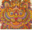

Season 1
- Chili and the Chocolate Factory puns | Roald Dahl fanfiction | humor | more puns (~85k words)
- Significant Digits HPMOR fanfiction (~300k words)
- Friendship Is Optimal MLP fanfiction | AI takeover | rationalist classic (~39k words)
- OCTO Lovecraftian alien POV | fun with CSS (~113k words)
- The Dandelion Dynasty alt-universe | science fantasy | Chinese history (in progress, 3 books published out of 4)
- The Waves Arisen Naruto fanfiction | munchkin (~133k words)
- The Metropolitan Man Superman fanfiction | rationalist classic (~78k words)
- There Is No Antimemetics Division SCP Foundation | memory screw (~60k words)
- Seed webcomic | rogue AI (in progress, ~100 chapters and counting)
- The Northern Caves meta fiction | meta review (~52k words)
Season 2
